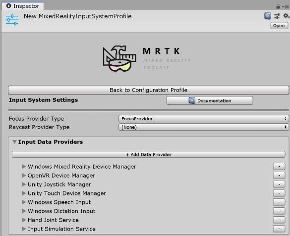

Systems, extension services and data providers
In the Mixed Reality Toolkit, many of the features are delivered in the form of services. Services are grouped into three primary categories: systems, extension services and data providers.
Systems
Systems are services that provide the core functionality of the Mixed Reality Toolkit. All systems are implementations of the
IMixedRealityService interface.
- BoundarySystem
- CameraSystem
- DiagnosticsSystem
- InputSystem
- SceneSystem
- SpatialAwarenessSystem
- TeleportSystem
Each of the listed systems are surfaced in the MixedRealityToolkit component's configuration profile.
Extensions
Extension services are components that extend the functionality of the Mixed Reality Toolkit. All extension services must specify
that they implement the IMixedRealityExtensionService interface.
For information on creating extension services, please reference the Extension services article.
To be accessible to the MRTK, extension services are registered and configured using the Extensions section of the MixedRealityToolkit component's configuration profile.

Data providers
Data providers are components that, per their name, provide data to a Mixed Reality Toolkit service. All data providers must specify that
they implement the IMixedRealityDataProvider interface.
Note
Not all services will require data providers. Of the Mixed Reality Toolkit's systems, the Input and Spatial Awareness systems are the only services to utilize data providers.
To be accessible to the specific MRTK service, data providers are registered in the service's configuration profile.
Application code accesses data providers via the IMixedRealityDataProviderAccess interface. To simplify access, data providers can also be retrieved via the CoreServices helper class.
var inputSimulationService = CoreServices.GetDataProvider<IInputSimulationService>(CoreServices.InputSystem);
Important
Although IMixedRealityDataProvider inherits from IMixedRealityService, data providers are not
registered with the MixedRealityServiceRegistry. To access data providers, application code must
query the service instance for which they were registered (ex: input system).
Input
The MRTK input system utilizes only data providers that implement the IMixedRealityInputDeviceManager.

The following example demonstrates accessing the input simulation provider and toggle the SmoothEyeTracking property.
IMixedRealityDataProviderAccess dataProviderAccess = CoreServices.InputSystem as IMixedRealityDataProviderAccess;
if (dataProviderAccess != null)
{
IInputSimulationService inputSimulation =
dataProviderAccess.GetDataProvider<IInputSimulationService>();
if (inputSimulation != null)
{
inputSimulation.SmoothEyeTracking = !inputSimulation.SmoothEyeTracking;
}
}
Accessing a data provider for the core input system can also be simplified via use of the CoreServices helper class.
var inputSimulationService = CoreServices.GetInputSystemDataProvider<IInputSimulationService>();
if (inputSimulationService != null)
{
// do something here
}
Note
The input system returns only data providers that are supported for the platform on which the application is running.
For information on writing a data provider for the MRTK input system, please see creating an input system data provider.
Spatial awareness
The MRTK spatial awareness system utilizes only data providers that implement the IMixedRealitySpatialAwarenessObserver interface.

The following example demonstrates accessing the registered spatial mesh data providers and changing the visibility of the meshes.
IMixedRealityDataProviderAccess dataProviderAccess =
CoreServices.SpatialAwarenessSystem as IMixedRealityDataProviderAccess;
if (dataProviderAccess != null)
{
IReadOnlyList<IMixedRealitySpatialAwarenessMeshObserver> observers =
dataProviderAccess.GetDataProviders<IMixedRealitySpatialAwarenessMeshObserver>();
foreach (IMixedRealitySpatialAwarenessMeshObserver observer in observers)
{
// Set the mesh to use the occlusion material
observer.DisplayOption = SpatialMeshDisplayOptions.Occlusion;
}
}
Accessing a data provider for the core spatial awareness system can also be simplified via use of the CoreServices helper class.
var dataProvider = CoreServices.GetSpatialAwarenessSystemDataProvider<IMixedRealitySpatialAwarenessMeshObserver>();
if (dataProvider != null)
{
// do something here
}
Note
The spatial awareness system returns only data providers that are supported for the platform on which the application is running.
For information on writing a data provider for the MRTK spatial awareness system, please see creating a spatial awareness system data provider.